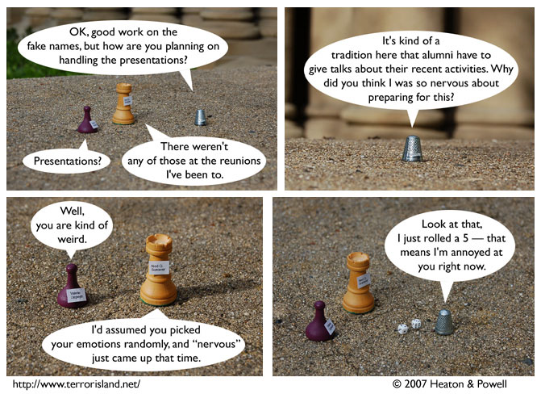

Strip #124
— Wednesday, March 28, 2007
2d6 is actually a pretty limited way to select emotions.
Notes, Thoughts, &c.
Ben’s Notes
It’s too bad that the text on their name tags isn’t very easy to read. That is realistic, though.
Lewis’s Notes
I found out today that I can’t pronounce the German names “Julia” or “Johannes” correctly, because of the vowels. I think I was happier when I mistakenly thought I could pronounce them correctly, but it is probably better that now I will not go around pronouncing them wrong and planting subtle seeds of resentment for me in the minds of so-named individuals.